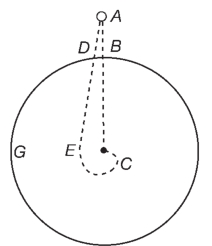
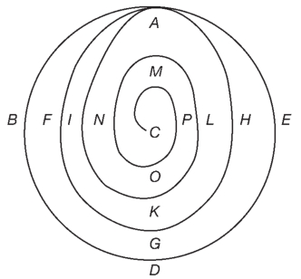
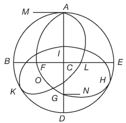
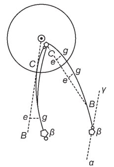
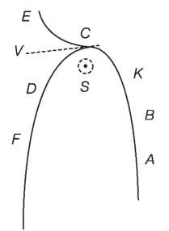
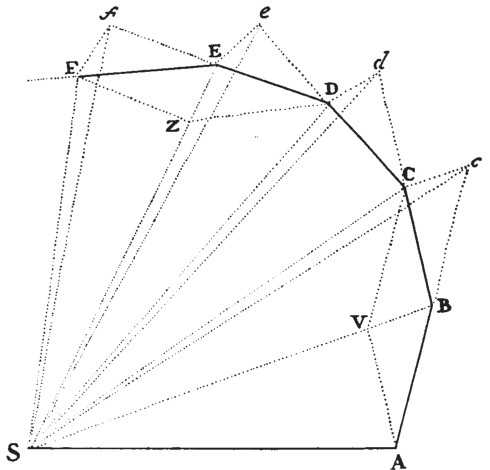
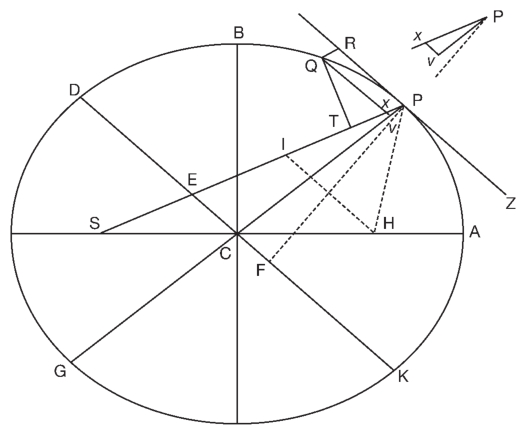

1679年6月初，牛顿的母亲死于一种热病。这病显然是她在照顾牛顿的同母异父弟弟本杰明时染上的。牛顿返乡照料生病的母亲并处理庄园事务，前后花去了大约六个月的时间。但不要忘了，在此期间，他每天还会花好多个小时来思考神学问题。11月底，牛顿从伍尔索普回到剑桥。回来后的第二天，他就回复了罗伯特·胡克的一封信。那时候，皇家学会的例会上早已不见了科学创新的乐趣。作为学会的秘书，胡克恳求牛顿将他可能想到的任何“哲学”问题与学会进行交流。胡克还问牛顿如何看待他的这一理论：利用一条惯性路线和一种将一个物体吸向另一物体中心的力来研究行星的运动。这次请教对牛顿发展自己的轨道力学具有非常重大的意义。
在回信中，牛顿找了个借口，说“我由于忙于其他事务”，多年来已很少考虑哲学了。不过，他还是提了一个关于地球日常自转的“怪念头”：当一个物体从空中落到地球上时，地球的日常自转并不会让物体落到正下方的那一点之后（“这与一般人的观念相左”），而会让物体落在它原来位置的前面 （即东侧）。这是因为物体在落下之前所处的高度上由西向东运转的速度要大于它在离地球较近的位置上的速度。如果将一个物体从一个高塔上扔下，也许就能证明地球每日都在自转。在假设地球没有阻力的情况下，牛顿还画了一个示意图，具体描述了物体落向地球中心的螺旋路线。

图10 牛顿提出的物体从地球表面正上方落下时途经的路线。在这里，随着地球围绕着C逆时针旋转（即BDG），牛顿假设物体的路线会一直进入地球的表面之内。
胡克回应说，根据他假定的惯性运动以及向心引力，牛顿描述的那样一个物体下落时会划出一个椭圆的形状，而不是一个螺旋。除非遇到阻力，不然这个物体会沿着曲线AFG永远运动下去，落到地球中心附近。胡克的这一评论很有见地，在他早期出版的一部作品中也宣扬过。一些历史学家据此觉得胡克在这方面应该得到比牛顿多得多的荣誉，后来的一些评论家也承认轨道力学的基本原理是由胡克提出的。但不管怎样，这些都永远无法改变一个事实：胡克始终未能证明如何从自己的物理原则中推出绕轨运行物体的椭圆运动。
像以往一样，牛顿无法接受别人对自己的纠正。他回信指出，再次假设没有阻力，物体也不会以椭圆路线下落，而会“在其离心力与重力交替压倒彼此的过程中进行或升或降的循环运动”。牛顿的回答表明，他此时距离七年后将在《原理》中采用的天体运动分析方法仍然非常遥远。不过，牛顿也暗示了一种复杂得多的方法：通过连续不断的、无限小的重力元素来解决这个问题。不仅如此，牛顿还暗示他能够处理一种并非维持不变而是从中心向外不断变化的重力。

图11 胡克反过来说，除非遇到阻力，否则牛顿所描述的那样一个物体会沿椭圆AFGHA旋转。在有阻力的情况下，物体则会落到地球中心附近。
胡克再次回信，这次透露说他原来就假定物体的重力总是与其到引力中心的距离的平方成反比。胡克说，现在的问题是：如果一个物体被吸向某一特定物体的中心，且其所受引力与它们之间距离的平方成反比，那么这个物体的运行会划出怎样的路线呢？在这里，胡克向牛顿提供了研究直线运动惯性与向心引力之间的新动态关系的关键线索。接着，胡克向牛顿提出了一个相关的问题（胡克与雷恩在伦敦讨论这个问题已经好几年了）：由开普勒第一定律可知天体的运行轨道是椭圆，那么如何将平方反比定律与天体的运行轨道联系起来呢？胡克告诉牛顿，他毫不怀疑“您轻易就会算出这个曲线到底是什么，它有什么特性，并提出这个比例的物理原因”。虽然牛顿后来指责胡克无能，不愿继续与他通信，但牛顿后来还是向埃德蒙·哈雷承认，他与胡克的这次交流引发了他对天体力学的重新思考。的确，大约就是在这个时候，牛顿迈出了重大的一步：用开普勒第二定律来证明一个沿着椭圆轨道运行的物体遵循引力平方反比定律。

图12 牛顿回信中的示意图。在图中，重力和“离心力”交替压倒对方。
牛顿还与首任皇家天文学家约翰·弗拉姆斯蒂德进行了一系列通信。这些通信对牛顿发展自己对天体运动的思考具有同样重大的意义。1680年11月初，天文学家们观察到了一颗灿烂的、让许多人感到恐惧的彗星（即所谓的大彗星），而且在随后的12月，夜空中又出现了一颗彗星。那时的人们还不大了解彗星的状况和运行轨道，其中部分原因在于彗星的出现频率非常之低。笛卡儿曾称彗星是耗尽了的恒星，而大部分天文学家认为彗星沿着直线运行。不过，弗拉姆斯蒂德于12月15日告诉牛顿，他曾经预测11月出现的那颗彗星将会再次出现，所以他提前几天就开始寻找这颗彗星，而且终于再次发现了它。不久，弗拉姆斯蒂德告诉埃德蒙·哈雷，他认为那颗彗星是一颗毁灭的行星，被太阳吸进了自己的涡旋。他说那颗彗星被吸到太 阳前面 的时候在太阳北极引力的作用下偏离了自己原来向南的路径，但同时太阳涡旋的旋转也使得这颗彗星侧向运动（从图13的e点到g点）。太阳继续将彗星吸向自己的中心，但同时逆时针旋转的太阳涡旋则不断地改变彗星的路径。当彗星离太阳最近的时候（在C点），太阳涡旋已将彗星的反“面”对向太阳，这样太阳的引力就变成了斥力。他说彗星的尾巴是大气中的潮湿部分为太阳加热所引起的。
牛顿也对这颗彗星着迷不已。牛顿从1680年12月12日开始观察彗星，一直持续到1681年3月初彗星消失。随着彗星逐渐消失，他还使用功能更强大的望远镜进行追踪观察。牛顿无法接受这两颗彗星本是同一颗的观点，并于2月末对弗拉姆斯蒂德的观点提出了一些尖锐的批评。他说虽然他可以想象太阳会持续不停地吸引彗星，使彗星偏离自己原来的路线，但是太阳对彗星的吸引永远都不会使彗星径直朝太阳方向运行。而且，太阳涡旋只会将彗星推离太阳。就算一颗彗星曾经转到太阳的正前方，它返回的路线也不会是天文学家所观察到的那个样子。此外，假设11月的那颗彗星与12月的那颗是同一颗，那么就会出现这样一个问题：这颗彗星从首次消失到再次现身之间何以会有那么长的一段时间？

图13 弗拉姆斯蒂德提出的1680至1681年冬的那颗彗星的运行轨迹。它从右下方的β点开始，在太阳前面的C点遭到排斥。
牛顿提出，解决这些问题的唯一方法，就是设想这颗彗星转到太阳的另一面 去了，但其背后的物理机理又不明确。牛顿承认太阳会发出一种向心引力，使行星沿曲线运行，而如果没有这种引力，行星是会采取直线运动的。不过，太阳的这种引力不会是磁力，因为磁石（天然磁体）在高温下会失去磁力。更重要的是，就算太阳的吸引力像一块磁铁，且彗星像一铁块，弗拉姆斯蒂德还是没有解释清楚太阳怎么会对彗星从吸引突然转向排斥。
近一个世纪以来，磁力一直是太阳吸引行星的最佳解释，但牛顿基于对磁体的认识——他在“疑问”笔记本中就有了这种认识——竟然彻底拒绝了这一解释，这具有举足轻重的意义。在后来的一封信中，牛顿说磁铁的“指令性”力量要大于其“吸引性”力量，所以一个物体一旦处于被磁铁吸引的位置，它就会一直处于这一位置，并将永远受到磁铁的吸引。太阳一旦吸引了彗星，就永远不会再排斥彗星。还有，就算的确有一种排斥性的磁力在起作用，这种力量也会在彗星到达近日点（图14中的K点）之前 的某个时间就排斥彗星，使彗星继续沿着自己的路径加速离开太阳，绕到太阳的另一侧。

图14 虽然牛顿仍然认为1680年的11月和12月出现的彗星不是同一颗，但他这一虽显粗糙但聪颖独到的图示则表明了同一颗彗星在太阳后面可能的路径。
牛顿否认排斥性磁力的存在，这同他的其他观点一样，显得非常新颖独到。彗星如果仅仅受到一种持续的吸引力，就会在离开太阳的过程中逐渐减速，沿着一条接近人们所能观察到的轨道运行。
大约就在此时，牛顿发觉只用一种吸引力来解释彗星也是可行的，从而意识到解决“同一个彗星”问题的办法。但在写给弗拉姆斯蒂德的信中，牛顿还是使用了他致胡克的信中提到的术语，说那种“vis centrifuga”或“离心力”在近日点“超过了”引力，从而使彗星不顾太阳的吸引而倒退开去。离心力就是一个沿轨道运行的物体离开吸引体的趋势（或程度）。虽然牛顿后来会舍弃离心力的概念，但是持续不断的引力这一概念却成为了后来《原理》中所论述的更成熟的动力学的基石。这时牛顿离认识到应像对待其他天体那样来对待彗星虽然还有三年之遥，不过已经很近了。
1684年8月，埃德蒙·哈雷前去剑桥拜访牛顿。此前一段时间，伦敦几位名流学者一直在讨论天体动力学的问题。哈雷拜访牛顿就是这些讨论促成的结果。根据牛顿的说法，哈雷当时问他与距离的平方成反比的力量会划出怎样的曲线，他不假思索地说经他演算应该是椭圆形。但当他寻找自己的演算证明时，却怎么也找不着了。哈雷一直等到11月，才收到了牛顿的一篇短篇数学论文——《论轨道中物体的运动》。牛顿在这篇《论运动》中勾勒出的宇宙是一个抽象的体系，其中运行着一个个遵循特定数学规律的物体。牛顿在这里创造了“向心”这一术语，用来描述在其体系中运作的朝向中心的吸引力。他把物体借以“尽力维持自身直线运动”的那种力量定义为“固有力”。牛顿进一步宣称：除非受到外力的作用，否则物体会永远沿直线运行下去。这些将共同构成《原理》中第一运动定律的基础。在标题“假设3”下，牛顿还描述了“力的平行四边形”定则的雏形。这一定则最终演变成了《原理》中的第二运动定律。
在《论运动》的“定理1”中，牛顿证明了开普勒第二定律，这是他整个分析的核心所在。开普勒第二定律适用于一切围绕一个引力中心旋转的物体：物体在相等时间内扫过相等的面积。牛顿的证明方法是将绕轨运动划出的面积分解成一个个无限小的部分。绕轨运行的物体每时每刻都会受到“冲力”的作用，给物体的运行方向带来无限小的改变，由此产生一系列面积彼此相等的无限小的三角形。不过，“定理2”与“定理3”研究的并不是冲力，而是连续力。最终而言，连续力都可按照伽利略发现的持续（匀）加速公式来研究。这样，牛顿就提出了两种力的解释：一种是“冲”力，由质量与速度的乘积（mv=动量）来计量；一种是“连续”力，由质量与加速度的乘积（ma）来衡量。这两种解释处于紧张状态，而且这种紧张状态在《原理》中依然存在。

图15 牛顿对开普勒第二定律的证明（见《原理》第一卷，命题1）。一个物体沿路线ABCDEF运行，为一种朝向S的向心力所吸引。可以认为，该物体在相等的时间内在B、C、D等几个点受到一种“唯一而巨大的冲力”的连续推动。这些点之间的距离可以变得无限小，好让其轨迹变成一条曲线。由于SAB、SBC等都是同样大小的三角形，所以该物体在同等时间内会扫过同等的面积。
牛顿在“定理3”中表明，绕轨运行的物体受到平方反比力的吸引。他进一步证明，行星就是按照他在论文中勾勒出的定律围绕太阳旋转的此类物体。具有重要意义的是，牛顿在“问题3”下证明了平方反比定律支配着在椭圆轨道中运行的物体。此外，他还首次将彗星纳入了一个自然哲学的数学体系之中。牛顿也认为，通过更为精密的分析，甚至还可确定彗星是否具有周期性（即是否拥有椭圆轨道和能够定期回归）。在“假设1”下面，牛顿指出他的体系中的物体通过没有阻力的介质运行。不过，他确实也以“问题6”与“问题7”的形式增加了一些论述阻力介质中的运动的内容。
在1684到1685年的冬天，牛顿与弗拉姆斯蒂德有过一系列有趣的通信。通信表明，牛顿已在试图将自己的分析与行星及其卫星的更精确的实际运行图景联系起来，并且正在测验开普勒第三定律的准确性。在此之前，弗拉姆斯蒂德已读过牛顿11月写的《论运动》。他意识到牛顿在论文中暗示，可以将行星当做像太阳一样具有向心吸引力的物体来对待。与此同时，牛顿还更进一步，假设如果木星支配着自己卫星的运动，那么木星对其他行星也会施加影响，而其他行星反过来对木星也会有影响。在1684年12月的一封信中，牛顿索要有关木星“作用”于土星的资料，但弗拉姆斯蒂德拒不承认相距如此之远的行星能够互相影响。此时的弗拉姆斯蒂德仍然认为就算有这种作用力，也必然是磁力。
1685年早期，牛顿开始修订《论运动》一文。在修改稿中，原来的“假设”上升到了“定律”的地位。虽然此时牛顿离提出万有引力理论还有一段时间，但是他已经提出了这一革命性的宣称：由于行星之间的互动作用无穷无尽且反复无常，太阳系的重力中心并非一直都处于太阳的位置，因此，行星的运行轨道总是不规则的，也永远不会是开普勒提出的那种精确的椭圆。多少世纪以来，人们都视行星的轨道为永恒完美的典范，但实际上它们时时刻刻都发生着微小的变化。牛顿指出，行星的实际运动情况繁琐复杂，非人类的智力所能洞悉。不过在大体上，人们还是可以将行星的轨道作为椭圆来对待。牛顿后来还会这样认为：这样一个宇宙体系能够保持稳定运作，只能归功于一位神圣几何大师的妙手。牛顿在这里还引进了一个论点，这一论点对其后来在《原理》中采用的方法至关重要：既然彗星的尾巴并未出现明显的缩减，那么在宇宙的自由空间中实际上并不存在什么阻碍彗星运行的物质。现在，牛顿也开始考虑这个问题了：以太不仅精微异常，而且不会产生阻力作用，这样的以太还能被说成是存在的吗？

图16 《原理》第一卷命题11问题6的图示。牛顿在此演示，物体P围绕焦点S沿着椭圆旋转，受到一种与距离SP成反比的向心力的吸引。
牛顿对力改变物体运动方式的分析发生了重大的变化，这使他现在可以重新引入惯性这一普遍化的概念。惯性指一个物体会保持其当前的运动状态或静止状态，而物体的运动或静止 状态都是相对于被选来当做参照框架的任何体系而言的。 牛顿接着提出了一系列革命性的主要见解。有了惯性这一被相对化的概念，牛顿进而宣布了一套“定义”（写于修订《论运动》之后），说物体围绕向心引力来源所做的匀速圆周运动并不是一种简单的惯性运动，而实际上是物体的运转速度与一种持续引力共同作用的产物——这种持续引力使物体不断偏离其原本会采纳的路径。
惯性概念具有相对性的含义，这就提出了一个棘手的问题：究竟能否发现绝对的运动？这一问题又回到了牛顿《论重力》中的分析。牛顿意识到这一问题不仅具有神学意义，而且还具有科学含义。因此，他对所下的定义做了补充，在其中强烈主张存在着一个绝对的空间，这个空间独立于其中的所有东西，“因为一切现象都取决于绝对的量”。正如我们在牛顿向伯内特所说的话中所看到的那样，牛顿认为普通人通过相对的话语来感受世界，所以先知也以那种语言向他们说话是理所应当的。在给《论运动》的修订版所写的补充材料中，牛顿写道：“普通人不能从可感知的表面现象抽象出思想，所以一直说着相对的数量，如果智者甚或先知以别的方式向他们说话，那将是非常荒谬的。”这一重大观点也被写进了《原理》，只不过没有提及神学而已。在《原理》中，牛顿说平民百姓只会考虑“可感知的物体”的数量。他继续写道，不过“在哲学讨论中，我们应该从我们的感官那里后退一步，来考虑事物本身——事物本身与人们对事物的仅仅可感知的度量是截然不同的”。牛顿想表明人们可以找到一个高于其他任何参照对象的“绝对”的参照框架，但他的这种努力到头来被证明只是一种幻想。
在同一份草稿中，牛顿又加了六条“运动定律”，其中的第三条称“一个物体给另一个物体施加多少作用力，它也会受到多少反作用力”。这实际上就将一个物体“抵制”移动的力（就是后来在《原理》的“定义3”中描述的“惯性力”）与持续或通过冲力施于任何物体的“压迫力”等同了起来。这条定律就是《原理》中第三运动定律的前身。有了这个定律，再加上他的质量概念，牛顿现在就可以将向心引力的概念推广到宇宙中万物之上了。
在这里，牛顿更加精确地定义了物质“体积”的量。起初，牛顿宣称物质的量与物体的重力“通常一致”。在1685年春天或夏天在他的“定义”修订稿中，牛顿将“物质的量”（或“质量”）定义为基本的、“均匀的”物质，所以一个物体“密度加倍，体积加倍”，其质量就会是原来的四倍。也许最有意义的是，牛顿这一新的分析方法要求将所有的基本物质都视为在本质上一般无二，而如果没有物质，就什么也没有。在《原理》定稿（1687年）第三卷的“命题6”中，牛顿引入了“假设3”，宣称由于物质的基本构成模块都是一样的，所以从原则上讲，一切形式的物质都可以互相“转变”。这样，牛顿就含蓄地将“质量”这个数学概念与他的炼金术式的分析联系了起来。
到1685年11月，牛顿已经完成了《原理》的一份初稿。这份初稿也叫《论物体的运动》，由两卷构成：一卷通常被称为《运动讲义》，另一卷是《论世界体系》。《运动讲义》扩充了原来《论运动》（及其各个修订稿）中提出的那些证明。在这里，牛顿试图解决在考虑两个以上物体之间的相互吸引作用时所遇到的那些棘手问题。
在1685到1686年的冬天，牛顿对《运动讲义》进行了扩充。他进一步分析了卫星（一个抽象天体，但其性质实际上与月球一模一样）在两个或多个天体（也是抽象体，但明显指的是太阳和地球）作用下的运动情况，增加了一个很权威的命题（XXXIX），毫不含糊地提到了他掌握的微积分知识。莱布尼茨在1684年首次发表了微积分的基本公理。牛顿这么做在一定程度上无疑是为了声明自己创立微积分并没有依赖莱布尼茨的工作。1686年早期，牛顿扩充了对阻力介质中的运动的处理。这一分析的篇幅变得非常之长，以至于牛顿将它单独列出，后来构成了《原理》的第二卷。第一部分是对无阻力介质中的运动的分析，后来成了《原理》的第一卷。在第二卷的定稿中，牛顿增加了更为复杂的关于压力和胶粘性的内容，认为笛卡儿提出的涡旋在物理上是不可能存在的。
在1685年完成的那部著作第二卷（即《论世界体系》）的开头，牛顿提到了支撑柏拉图、毕达哥拉斯和罗马贤王努马·庞皮利乌斯的著作的古代哲学与天文学。努马曾“为女灶神维斯太建造了一座圆形的庙宇，下令在庙中央燃起一堆火，并要保持长明不灭”，以此象征以太阳为中心的世界体系。与大部分同代人一样，牛顿也认为古人对自然世界有过正确的认识，只不过这种知识在后来遗失了。牛顿在17世纪80年代中期撰写了一长篇论文（《外邦人神学的哲学起源》），认为古人曾经相信宇宙是以太阳为中心的，但是这一认识被后人误解和歪曲了。对那些以太阳为中心的宇宙的象征性表述，毕达哥拉斯和其他一些人能够正确理解其中的真正含义：太阳居于中心，周围则环绕着沿同心轨道运行的行星。但是，亚里士多德等希腊人则假定这样一个系统的中心是地球。
最初，希腊人通过俄耳普斯和毕达哥拉斯从埃塞俄比亚人和埃及人那里获得了对自然世界的认识。埃塞俄比亚人和埃及人将这些真理藏起来不让普通人知道。在那时候，有一种仅供传授给专家的“神圣”哲学，还有一种公开向普通人传扬的“通俗”哲学。埃及人
在《论世界体系》中，牛顿再次提出这个观点：像迦勒底人一样，古埃及人已然知道彗星是天体现象，可以将彗星当做一种行星来对待。
古埃及人按照太阳系的模式修建庙宇，根据行星的顺序来给他们的众神命名。同样，古埃及人的宗教也是基于他们对天体的理解进行的仿效。牛顿偶尔还会提到古人的“天文神学”。将七个已知的行星（包括月球）与五种元素——气、水、土、火和上天之精髓——加起来，就能得到各古代宗教所共有的十二个主神。诺亚是土星和杰纳斯，有三个儿子。牛顿与其他历史学家一样，采取了一种“神话即历史”的方法，认为异教徒的神话描述的是被神话了的真实人物，只不过不同民族对他们的称呼不同而已。此中证据有：神话人物的名字多有相似之处，尤其是对神话人物的性格与行为的描述显然一模一样。
由此来看，《论世界体系》的第一部分应是牛顿在写就该文之时正在着手进行的一个更大项目的衍生物。在随后的几十年中，牛顿都曾下大工夫并以多种形式寻找古代文献中有关真正哲学的“线索”。例如，在稍后完成的一篇文章《宗教的起源》中，牛顿断言古代中国人、丹麦人、印度人、拉丁人、希伯来人、希腊人和埃及人都曾按照同样的习俗奉行崇拜，而英格兰的史前巨石群显然是又一座维斯太庙。牛顿继续写道，宗教的这一面是再“合理”不过的了：“在没有启示的条件下要获得对神的认识，除了借助自然框架之外”别无他途。由于拥有关于真正哲学的知识，他能够恢复那种一直被“遮盖”的神圣哲学，而这反过来又能保证他自己对世界的解释是正确的。牛顿的神学工作旨在恢复真正的宗教，同样，牛顿也一直认为自己所从事的科学工作在本质上就是为了恢复已经丧失了的知识。
《运动讲义》研究的是一个抽象的数学体系，《论世界体系》的其余部分则研究了潮汐的数据（系1685年秋通过通信从弗拉姆斯蒂德处获得），描述了钟摆实验、真实的月球以及其他来自真实世界的现象。牛顿将这些与《运动讲义》中描述的数学世界进行对比，进而断言，在那个抽象世界中运作的定律同样支配着我们真实世界中的现象。不过，此时的牛顿还无法在第二卷中对彗星做出充分的解释，所以他在1685到1686年的冬天经过不懈努力，终于提出了一个充分的解释。
《原理》的最后一部分即第三卷完成于1687年初，研究的是世界的真实体系。牛顿根据基本原则，通过天文数据和物理数据证明了地球在两极是扁平的（即地球是一个扁圆的球体）。最后，牛顿展示了他的物理学可以用来解释彗星的行动。如果找找以前记载了类似轮廓的彗星的资料，我们可能会觉得彗星的轨道是周期性的，因而是椭圆形的。虽然如此，我们还是可以将彗星接近太阳的轨道视为抛物线，而且这部分轨道可以通过实际测算来确定。在这里，牛顿花了一些篇幅来描述彗星的神奇功能。在彗星接近太阳的过程中，彗尾会从太阳的物质中获得补给，这反过来又会更新彗星的流质成分。每当行星从彗星的尾巴中穿过，行星上的生物就会从彗星的流质中获得营养。牛顿还写道，空气中最精纯的部分，就是维持地球上一切生命的那部分，也来自彗星。显然，牛顿在此扩展了他在17世纪70年代所写的包含炼金术和哲学内容的著作中所描述的地球的循环体系。
1687年，《原理》面世。这部著作大胆地宣布了一个将影响后世科学研究达三个世纪之久的信条：假设应该被摒弃，设计精良的实验应该成为普遍数学定律的基础；这些普遍的数学定律在数量上越少越好，而且应该被视为准确无误，除非出现相反的证据。《原理》中最伟大的概念是万有引力定律。根据这一定律，大物体会彼此吸引，两个物体之间的引力等于常量“G”乘以它们质量的乘积再除以两物距离的平方（Gmm'/r2 ）。《原理》的划时代意义由此开始显现：拥有向心引力的不再只是巨大的行星了，因为从第三运动定律中可知，所有的大物体都会施加这样一种力。这就产生了一个令人惊叹的结论：宇宙中的每一个大物体都吸引其他每个物体。这将给牛顿和他的同代人提出一些重大的问题。究竟什么是引力？宇宙一端的物体如何向另一端的物体施加这种引力？引力通过何种媒介运作？
在将《原理》的最后一批书稿发往伦敦之前不久，牛顿还为《原理》撰写了一篇不同寻常的《结论》，在其中声称《原理》中的分析方法可以用来研究地球上的一切现象。牛顿已经用万有引力解释了宏观现象，在此方法的基础上，他认为应该援引短程力来解释“无数”其他的局部性运动。这些运动因过于微小而无法察觉，但正是它们引起了地球上的诸多现象，例如电、磁、热、发酵、化学转变、动物的生长等。
牛顿在第二卷中分析天上的运动时完全摒弃了他二十年来一直倚重的以太。同样，在分析地球上的现象时牛顿也摒弃了以太。他提出就用他所说的吸引力与排斥力来取代以太。他用通俗的言语说，人们传统上就用“引力”这个概念来形容微粒借以“冲向彼此”的任何一种力。在短程范围内，这些力具有吸引性。这可以解释他以前在炼金术和哲学工作中注意到的物质“凝结”的属性。距离再大一些，这些力就变成排斥性的了。这可以解释之前在《假说》中用以太来解释的表面张力现象（例如苍蝇可以在水上行走）。不过，牛顿声称这类力有好几种，不过这就与他提出的哲学家应该采纳尽可能少的普遍原则的要求有点冲突了。
牛顿还写道，他之所以提到这些力，只是为了鼓励进一步的实验而已。不过，他接着又基于物质的基本原料是相同的这一观点提出了一个推测。因为绝大部分空间都是空的，所以促使物体结合的那些力会使物体结合形成规则的结构，“如同雪和盐的形成过程那样，几乎就像艺术的产物”。物质内部会有网状的结构，由很长且富有弹性的几何竿组成。这一点可用来解释为什么有些物体要比其他的物体更容易加热或者可以让更多的光线穿过。牛顿再次援用接近炼金术语言的术语，称在吸引力的作用下，物质基本元素的不同网状排列能够让嬗变得以发生。牛顿使用海尔蒙特的概念断言，水“这种稀薄物质”通过发酵可以转变为动物、植物和矿物中“更稠密的物质”，并且最终可以“转化为矿物质和金属物质”。在另一方面，斥力则能让稠密的物体变成蒸气、挥发物或空气，而让更稀薄的物体变成光本身。牛顿的这个微观世界设想令人吃惊，但他最后却取消了出版这篇《结论》的计划，而是将它浓缩为一篇前言的草稿。不过，就是这篇前言在《原理》的定稿中也没有出现。
1686年5月，就在《原理》第一卷被介绍给皇家学会之后不久，哈雷告诉牛顿胡克对其中的平方反比定律有“一些要求”，声称是他让牛顿注意到这一定律的。虽然胡克并没有对由平方反比定律证明出圆锥曲线提出任何权力要求，但这一次牛顿则对胡克完全失去了耐心。牛顿告诉哈雷，胡克在1679到1680年与他的整个通信过程中都跟他纠缠不清，而且此人没有给他带来一点他原先不知道的东西。几天后，在细读了一些过去的论文之后，牛顿非常生气地发现原来胡克仅仅“猜测到”平方反比定律会一直延伸到地球的中心，而且他的这种猜测还是错误的。牛顿告诉哈雷，他决定停止第三卷的撰写工作，因为哲学“就像一个傲慢无礼、争论不休的女人，一个男人一旦与她发生纠葛，无异于惹上了一场官司”。
牛顿并没有就此打住。他告诉哈雷，就在基本写完该信的时候，他听说胡克正在“蛊惑人心，伪称我的一切都源于他，并希望人们能为他伸张正义”。像以前一样，牛顿指出胡克在哪些地方窃取了他人的著作，将他人的东西当做自己的东西一样传播。胡克在自己的著作中显得
牛顿讽刺道，在胡克看来，
与以前两人的交锋一样，牛顿还编造了一个复杂而又难以置信的故事，说胡克有可能是从与他的通信中一点点搜集到平方反比定律的。哈雷的回信让牛顿平静了下来。哈雷告诉牛顿，他就此事在一家咖啡馆里进行了讨论，现在很少有人还相信胡克证明了椭圆轨道与平方反比定律的关系，或是相信胡克提出了一个关于自然的宏伟体系。
显而易见，牛顿并没有停止《原理》第三卷的写作，不过他的确使表述更加数学化、更加难以理解了。这其中有一部分原因可能是要给胡克一个教训。但无论如何，第三卷必然更加令人生畏，这是其内容发展的必然要求。许多很有成就的数学家虽然下了工夫，但也只能理解《原理》中的头几条命题，其他的就无能为力了。这样一来，《原理》便以深奥难懂而闻名了。